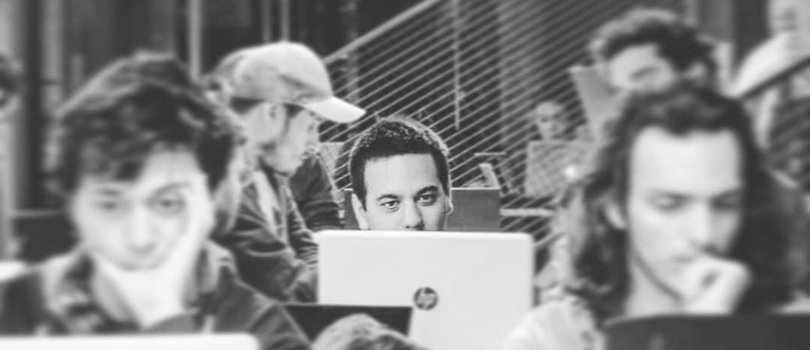

About
18 years old me at the 2018 GGJ, working on my first ever 2D game.
Hello travelers! I am Tzach, a 28-year-old programmer from Be'er Ya'akov, Israel. Beyond work, I'm drawn to the richness of different cultures, always eager to learn and understand more about our diverse world. As a peoples person, I cherish the simple joys of spending time with my family and pets, as well as catching up with friends. Gaming and game development have been my passions for years, providing a creative outlet where I can bring worlds to life. I'd be delighted to share some of my experiences and endeavors so far.
My journey with programming began at high school, where I studied the basics of programming, focusing on C# and SQL. After my studies I soon got drafted in the IDF, there I got trained at an IT & DevOps bootcamp where I learned the basics of Networking, Operating Systems and Scripting. Finishing the bootcamp led me to get recruited by Mamram, where I did my service as an Automation Developer, responsible on writing monitoring scripts for servers in Powershell, Perl, Bash and Python, and deploying them on servers via HP OMI.
During my service I decided to explore the world of programming at my own pace. As someone deeply passionate about gaming, it was only natural that my exploration eventually led me to the realm of game development and Unity specifically. I was drawn to everything it had to offer and enjoyed as I gathered a lot of components and breathed life into them with code and animations. I soon discovered that there was a massive, very friendly game development community in Israel and it wasn't long until I found myself going to a game devs convention. There, I met the lovely guys from Gavra Games studio and they gave me my first shot at game development, you can check out the result here.
After my service, I soon started seeking higher education and started my bachelor's degree in computer science at Bar Ilan University. There I expanded my knowledge and studied Data Structures, Algorithms and Advanced OOP. Moreover, in my last year I took courses in AI, which gave me the opportunity to learn about the basics of Image Generation, Speech Recognition and NLP. During my studies I started a career as a Software Developer in Check Point, where I still work to this day. There, I learned about working as a team player in an organization, how to review code and manage versions with git.
At present day, I'm searching for my next adventure, one that will allow me to use my skills to create great games and to become a better developer in the process. Hope to hear from you soon!
Experience
Work
Check Point Software Technologies | 2021 - Present
In Check Point I work as a Software Developer for Gateway-side, mainly on Linux/Unix, including coding in C, C++, Javascript and more. I Learned to work well both as an individual and as a team member in an organization and in an agile environment that included code reviews and continuous builds.
Mamram, IDF | 2015 - 2018
In Mamram, I mainly dealt with Automation development with the OMW / OMI product by HP, including scripting in Python / Bash / Perl languages on both Linux and Windows servers. In addition, I mentored new members who joined the team later.
Gavra Games | 2018
I was an intern in Gavra Games and I was tasked with developing the mini game inside "Warriors: Rise to Glory", their game product. I developed with Unity, including scripting in C# and experimenting with the engine's features, such as physics, particle effects, etc.
Education
Bar Ilan University | 2018 - 2022
BSc. in Computer Science. In my last year I took courses in various subjects from the realm of AI, such as NLP and Image Recognition.
Hands on Games | 2022
I took an Advanced Unity Development course in the 'Hands on Games' college, where I learned mostly about good practices in Unity, design patterns, tech design and more.
Amit Amal High School | 2012 - 2015
Graduated high school with a certificate of excellence. In high school I specialized in Computer Science, Math and Physics.
Projects

This was the result of my internship in Gavra Games. I was tasked with creating a mini game that would provide the player a way to earn gold without risking the life of his character in the gladiator arena. So, with a game design that was influenced by all of us in the team, I created a game of dice where you and your opponent roll dice at your respective turns. The dice have values of Damage / Shield / Self Damage / Return, and based on luck, your goal is to either defeat your opponent, or have more HP than him. This project gave me experience in 3D based physics, particle systems, UI/UX, colliders and more.

The Descent was the final project for my CS degree in Bar Ilan University. From the moment I started my studies I knew that when it'll be the time for the final project, it will be a video game. So, I challenged myself, and combined my knowledge in Unity with what I've learned so far - I created a "rogue-like" game, where you are an adventurer descending into an Egyptian tomb, and defeating dreadful mummies. The tomb is created in runtime with procedural generation, and the mummies follow the player on a matrix with BFS algorithm. In this project I learned more about shaders and post-processing, since I wanted the final result to look polished.
Governor was the final project for my Advanced Unity Development course in Hands on Games college. We didn't have much time so the project's scale needed to be rather small, so I decided to base my game on the popular mobile game "Reigns", where you play as a king trying to manage a kingdom based on his advisors. This one is similar, but you manage a country as a prime minister. In this project I implemented what I learned at the course and used tech design and classes structure to be more efficient and organized. I also got my cards data and configuration with FireBase API.

My 2024 GGJ game. The theme was "Make Me Laugh" so my team and I made a game where you play a thief infiltrating the Illuminati and trying to steal objects from their members. When the boss makes a joke, you have to laugh (literally, the game uses a microphone!) or you will be suspected and caught!

My 2018 GGJ game (and first 2D game!). The theme was "Transmission" so my team and I made a game where you play as a doctor who was trapped by an evil genius and his only way out is to solve riddles where you move robots to their targets. The robots are controlled by a transmission ray, BUT - they can only move if the ray is in the same color as them, meaning the ray has to move through different floors in order to be in the correct color.
Contact
Elements